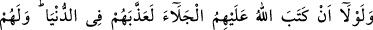
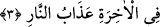

Yahya b. Muaz (r.h.), “görmekle ibret almayan, öğüde ihtiyaç duymayan kimsedir”
demiştir.
Bu âyet-i kerime ile kıyasın dinî ve hukukî işlerde hüccet olduğuna delil
gösterilmiştir. Çünkü, bu âyet-i kerimede bir halden başka bir hale geçmek ve
aralarında aynı hükmü gerektiren ortak sebepten dolayı bu hâlin o hale hamledilerek
yorumlanması emredilmiştir. Nitekim, Usûl kitaplarında da bu konu böyle açıklanır.
Bu âyet-i kerime, kitab ehli ifâdesiyle nefis yahûdilerine ve hevâ nasrânilerine de
işâret etmektedir. Biz nasranileşmeyi hevâya, yahûdileşmeyi de nefse nisbet ettik.
Çünkü nefsin serkeşliği diğerinden daha kötüdür. Nefse nisbetle hevâ, bedene/cisme
nisbetle ruh gibidir. Bu mânâdan dolayı heva nefsin ruhudur, ona hayvânî şehvetlerin
arzularını üfler. Ve onu hâviye adlı cehennem ateşine sürükler. Allah Teâlâ, ilk haşrin
savaşından, ilk sadme ile onların karanlık sıfatlarının yurdundan kökünden koparıp atar.
Onlar ise çirkin tabiatlarının kalelerinin, alçak ve çirkin sıfatlarından soyulmalarına
mâni olacağını sanmışlardır. Ne var ki, Allah Teâlâ’nın kahır azâbı geliverdi ve nefis
hevâlarının kalplerinin aralarına ayrılık korkusu düşürdü ve onlardan her biri diğerine
ruhun bedene tutunmasına benzer bir şekilde birbirine tutundular da sıfatlarının
yurtlarını, saptırıcı heva ve heveslerinin elleri ve ruh, sır ve kalp gücünün elleriyle,
aydınlıkları onlara üstün geldiği için, harap ediyorlardı. Öyle olunca, ey gözleri Hak
olanlar! Öğüt alın! Tıpkı, “Benimle görür, benimle işitir ve benimle tutar”[31] hadisi
kudsisinde buyrulduğu gibi.
3. Eğer Allah onlara sürgünü yazmamış olsaydı, elbette onları dünyada (başka
şekilde) cezâlandıracaktı. Âhirette de onlar için cehennem azâbı vardır.
“Eğer Allah onlara sürgünü yazmamış olsaydı, elbette onları dünyada (başka
şekilde) cezâlandıracaktı.” Yâni onların böyle şiddetli ve rezil bir şekilde
vatanlarından çıkmalarını ve sürülmelerini hükmetmeseydi, Kureyzâoğullarına yaptığı
gibi Allah Teâlâ Nadiroğullarını başka şekilde öldürülmek ve esir edilmekle
cezâlandıracaktı. Âyetteki levlâ harfi imkânsızlık bildirir. Kendinden sonraki kelime de
mübtedâdır. En harfi de enne den hafifletilmiş, ismi bir yere bağlı olmayan gizli bir
zamir olan harftir. “Allah yazdı” cümlesi de haberidir. Cümle bütünüyle mahallen merfu
olup mübtedâdır ve “Onların sürgün edilmeleri ilm-i ilâhîde veya levh-i mahfuzda
yazılmış olmasaydı” mânâsınadır.
Âlimlerin bir kısmı şöyle demişlerdir: Nadiroğulları büyük günahları sebebiyle çok
büyük kahra müstehak olduklarından öldürülmeye denk bir cezâ olan yurtlarından
sürülmekle cezâlandırıldılar. Nitekim: “Eğer onlara, kendinizi öldürün yahut